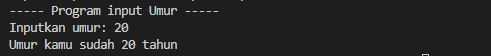

Tutorial Java: Cara Input Output

Seperti yang kita ketahui, program komputer terdiri dari tiga komponen utama, yaitu: input, proses, dan output.
- Input : nilai data yang kita masukkan ke program
- Proses : mengelola input menjadi sesuatu yang berguna
- Output : hasil pengolahan dari proses
Semua bahasa pemrograman mempunyai fungsi-fungsi yang berbeda untuk melakukan input dan output.
Pemrograman Java mempunyai tiga class atau fungsi untuk mengambil input, yaitu :
- Class Scanner;
- Class BufferReader;
- Class JOptionPane;
Class Scanner dan BufferReader mengambil intput pada program berbasis teks. Sedangkan Untuk GUI menggunakan class JOptionPane.
Untuk output, Java menyediakan fungsi print(), dan println()
Input Menggunakan Class Scanner
Scanner merupakan class input paling sederhana, tetapi Scanner mempunyai bug jika kamu menggunakan banyak input. Scanner cocok untuk program sederhana saja
Agar kita bisa menggunakan Scanner, kita perlu import librarynya kedalam kode:
import java.io.*;Setelah itu buat object baru menggunakan class Scanner
Scanner input = new Scanner(System.in);Perlu diperhatikan kita sudah membuat objek Scanner bernama input. Selanjutnya kita akan menggunakan objek tersebut untuk menyimpan data dari yang user masukkan. Langsung saja kita praktekkan, silahkan ikuti kode berikut ini:
// import library scanner
import java.util.Scanner;
public class caraScanner{
public static void main(String[] args) {
// deklarasi variabel
String nama;
int umur;
// membuat objek scanner
Scanner input = new Scanner(System.in);
// menampilkan output
System.out.println("---- Data Diri ----");
System.out.println("Nama : ");
// menggunakan scanner untuk input yang akan user masukkan
nama = input.nextLine();
// menampilkan output lagi dan menggunakan scanner untuk input
System.out.println("Umur : ");
umur = input.nextInt();
// menampilkan data yang sudah user inputkan
System.out.println("---------------");
System.out.println("Nama anda adalah "+ nama);
System.out.println("Anda berumur "+ umur+" tahun" );
}
}Perlu diperhatikan, penggunaan fungsi untuk mengambil data bergantung dari tipe data variabel yang kita gunakan.
Misalnya jika tipe datanya String, maka fungsi atau method yang dipakai adalah nextLine().
Begitu juga dengan tipe data lain, Integer menggunakan nextInt(), tipe data Double menggunakan nextDouble(), dsb.
Setelah membuat program, silahkan run program tersebut dengan cara klik kanan kemudian pilih Run File atau tekan tombol Shift+F6.
Input Menggunakan Class BufferReader
Class BufferReader sebenarnya tidak hanya untuk mengambil input keyboard saja.
BufferReader juga bisa dogunakan untuk membaca input dari file dan jaringan.
Class ini terdapat pada library java.io
Silahkan import library terlebih dahulu untuk dapat menggunakan class BufferReader.
import java.io.*;Kita juga harus menambahkan throws IOException setelah setelah deklarasi fungsi utamanya. Langsung saja kita praktekkin
Silahkan buat class baru. disini saya menggunakan class bernama Main. Kemudian isi dengan kode berikut.
import java.io.*;
public class Main {
public static void main(String[] args) throws IOException {
// deklarasi variable
int umur;
// membuat objek BufferReader
BufferReader br = new BufferReader (new InputStreamReader(System.in));
// mengisi variable umur dengan BufferReader
System.out.println("----- Program input Umur ----- ");
System.out.print("Inputkan umur : ");
umur = Integer.parseInt(br.readLine());
// tampilkan output dari isi variable umur
System.out.println("Umur kamu sudah " + umur + " tahun");
}
}
Perhatikan: dalam kode diatas, kita menggunakan fungsi Integer.parseInt(br.readLine()); untuk tipe data integer. Artinya kita merubah tipe data String ke Integer.
Untuk tipe data String gunakan fungsi readLine() saja.
Sekarang mari kita coba jalankan programnya:
Input Menggunakan Class JOptionPane
Class JOptionPane berdeda dengan Class input sebelumnya, karena class ini menggunakan tampilan GUI untuk memasukkan inputnya.
Class ini akan lebih interaktif terhadap user.
Untuk menggunakan class ini, kita perlu mengimpor librarynya terlebih dahulu.
import javax.swing.*;Langsung saja kita coba buat programnya. buatlah class baru, saya disini menggunakan class bernama caraJoptionPanel
import javax.swing.*;
public class caraJoptionPanel {
public static void main(String[] args) {
// deklarasi variable
String nama, kota;
// membuat input JOptionPane
nama = JOptionPane.showInputDialog("Nama Anda : ");
kota = JOptionPane.showInputDialog("Kota Asal : ");
// Menampilkan output
System.out.println("---------------");
System.out.println("Selamat Datang " + nama" dari" + kota );
}
}
Output :
Kita baru saja mengetahui tiga cara mengambil input dan menampilkan output.
Sekian tutorial kali ini. Terimakasih sudah membaca, semoga membantu.